1. Хрустальный Трон в двух словах
Хрустальный Трон — государственная Иерархия Шончанской Империи, восстановленной и расширенной к 270 году после Последней Битвы. Это жёсткая пирамида, в которой жизненная сила и Воля подданных передаются только вверх, а строгая дисциплина поддерживает этот односторонний поток. Чем выше стоит человек, тем больше силы он удерживает; вершина принадлежит одному суверену.
Название относится одновременно к трём вещам: древнему тер’ангриалу во дворце, построенной вокруг него системе передачи Воли и политическому порядку Империи. Поэтому фраза «служить Трону» означает не просто почитать символ верховной власти, а участвовать в реальном потоке Воли.
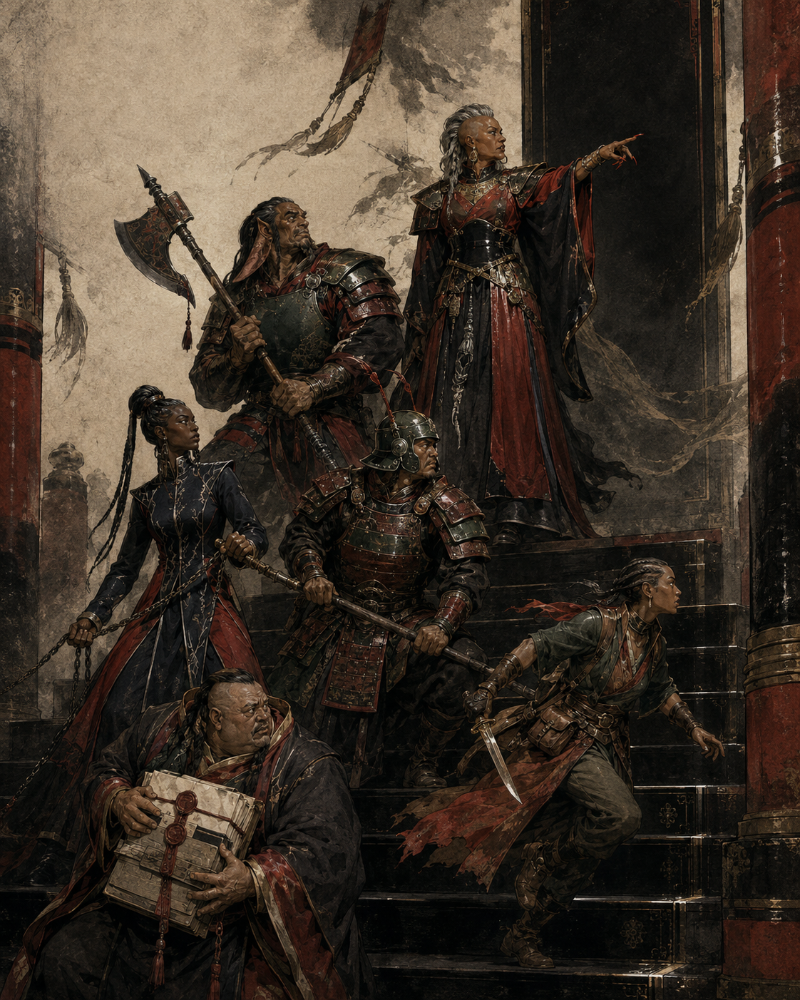
Трон обещает порядок, защиту и возвышение. Цена этого порядка — постоянный отток жизненной силы от основания пирамиды и зависимость верхних ступеней от подчинения тех, кто стоит ниже.
2. Истоки новой вертикали
После исчезновения Ранда ал’Тора одного закона стало недостаточно. Мир Дракона сохранялся, но возвращение мужчин-направляющих, мятежи на завоёванных землях и западные представления о личной свободе угрожали шончанскому порядку. Империя ответила не реформой, а превращением субординации в физический закон.
Сул’дам и дамане, работавшие с тер’ангриалами, переработали принципы действия древних артефактов, которые давали скорость и силу ценой жизни владельца. Новая технология не сжигает одного человека мгновенно: она понемногу собирает доли жизненной энергии миллионов и проводит их по цепи присяг к центру.
Хрустальный Трон перестал быть только символом двора. Тер’ангриал удерживает форму пирамиды и заставляет поток искать единственную вершину. Пока эта форма цела, власть стремится собраться в одном лице даже после смены законов, чиновников или границ.
Средние ступени поддерживают систему не только из страха. Повышение возвращает утраченную жизненную силу и даёт её избыток, проявляющийся в большей выносливости, скорости и ощутимом давлении власти. Академия Девяти Лун превращает эту зависимость в идеологию служения: чем выше человек поднимается, тем менее смертным он себя ощущает.

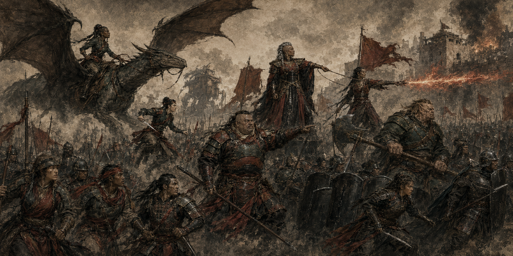
3. Пирамида Воли
Социальная пирамида шире механической таблицы. Любой прошедший Принятие Воли входит в систему как потенциальное звено, но постоянная передача начинается только после личной присяги. Игровой ранг назначается тогда, когда положение персонажа влияет на его параметры. Поэтому да’ковале, свободный служащий, младший офицер и представитель низшей знати могут иметь один и тот же I ранг, хотя их права различны.
Титул не создаёт силу автоматически. Принц Крови без закреплённого V ранга остаётся принцем по происхождению, но не получает механических преимуществ V ранга. И наоборот, человек может временно исполнять высокую должность, однако до имперского пожалования и ритуального закрепления его тело не способно безопасно удерживать соответствующий поток.
4. Что именно передаёт подданный
Воля — не отдельная характеристика листа персонажа. В рамках Хрустального Трона этим словом называют жизненную устойчивость человека и часть его внутренней силы, которую ритуал позволяет передавать по Иерархии. В игре эта передача выражается штрафами нижнего ранга и усилениями старших ступеней, а не отдельным запасом очков.
Низшие участники ощущают отток как усталость, медленное восстановление и привычку уступать старшим ещё до прямого приказа. Ритуал не лишает человека личности и не превращает его в безвольную марионетку: он создаёт устойчивый канал. Для конкретного принуждения всё ещё нужны приказ, аура, очарование или иной описанный эффект.
Верхние ступени получают не воспоминания и не навыки доноров, а жизненную силу, которую их тело способно усвоить. Она повышает характеристики, скорость, живучесть и давление власти. Именно поэтому знания подданных не переходят к Императрице, а их ослабление не означает постоянного контроля над разумом.
5. Дамане, сул’дам и Единая Сила
Дамане и сул’дам не образуют отдельной вершины пирамиды. Они служат инструментами, с помощью которых Империя исследовала передачу Воли и научилась усиливать направляющих. Сам по себе представитель высокой Крови не становится направляющим и не получает способность видеть потоки Единой Силы.
Если иерарх уже умеет направлять, к нему применяются данные столбца «Для направляющих». Если он не направляет, этот столбец следует игнорировать: ранг не даёт ему плетений, ячеек плетений или способности направлять Единую Силу. Способность «Госпожа дамане» действует отдельно: она позволяет иерарху усилить уже создаваемое плетение дамане, с которой он связан а’дамом, при соблюдении указанной дистанции.
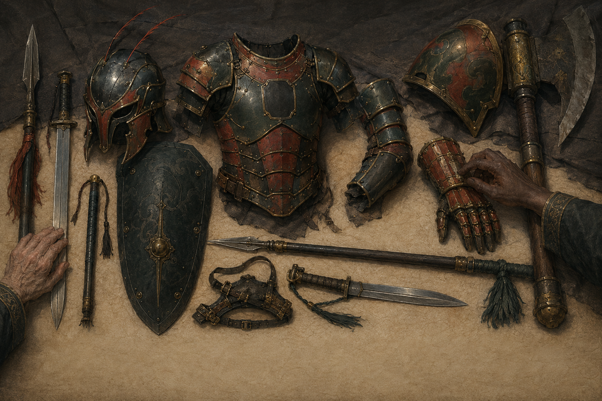
6. Ритуал Принятия Воли
В шестнадцать лет каждый подданный Шончанской Империи обязан пройти Ритуал Принятия Воли. С этого возраста Империя признаёт человека самостоятельной единицей Иерархии. Без Принятия он не обладает полным статусом участника системы и не может получить её ранг.
В каждом крупном поселении стоит Обелиск Воли — высокий гладкий камень без украшений, тёплый на ощупь. Кандидат подходит к Обелиску один, касается его поверхности ладонью и лбом и на мгновение теряет ощущение собственного веса. Затем произносит формулу: «Моя Воля — часть Воли Империи. Моя жизнь — часть жизни Хрустального Трона».
Обелиск не начинает постоянный отток немедленно. Он открывает в человеке канал и оставляет устойчивый отпечаток, по которому система сможет его распознать. Это важное различие: Принятие создаёт возможность передачи, а личная присяга задаёт адрес потока.
7. Личная присяга и начало потока
После Принятия человек присягает конкретному звену: дому Крови, воинской части, администрации, ремесленной структуре или двору. Присягу принимает уполномоченный старший, уже связанный с вышестоящей цепью. Через эту цепь личный канал соединяется с Троном.
С этого момента начинают действовать механические эффекты назначенного ранга. Присяга действует постоянно и не требует находиться рядом с начальником, столицей или Обелиском. Географическое расстояние само по себе не отменяет эффекты: иначе дальние армии и наместники теряли бы силу сразу после выхода из порта.
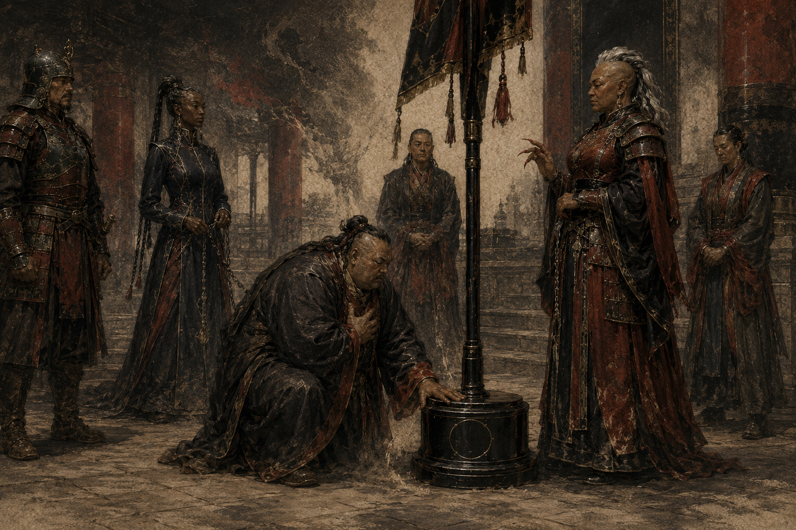
Приказ старшего и магическое принуждение — не одно и то же. Обычный приказ поддержан законом, страхом и культурой, но сам по себе не принуждает к исполнению. Механическое воздействие возникает только тогда, когда применяется «Имперский приказ», «Аура Страха», «Голос Императрицы» или другой эффект с указанным спасброском.
8. Повышение, понижение и Возврат Воли
Ранг нельзя получить одной популярностью или числом сторонников. Рост числа подчинённых способен усилить поток, но не повышает допустимый ранг автоматически. Империя либо узаконивает новое положение официальным пожалованием и ритуальным закреплением, либо перераспределяет подчинённых и ликвидирует несанкционированный центр власти.
- Повышение. Старший жалует новый ранг, после чего Обелиск или придворный ритуал расширяет допустимый канал. Числовые параметры пересчитываются по новому рангу, а уникальные способности нижних рангов сохраняются.
- Снятие с должности. Административное решение само по себе не обязано менять ранг или связь с Хрустальным Троном. Механические последствия возникают только при понижении, Возврате Воли, Освобождении или ином явно указанном изменении связи.
- Понижение. Канал сужается до указанного ранга. Персонаж сохраняет класс и уровень, но немедленно теряет недоступные новому рангу числовые бонусы и способности.
- Возврат Воли. Активная передача жизненной силы персонажа вверх по Иерархии прекращается, но отпечаток Принятия сохраняется. Такой человек остаётся распознаваемым системой Хрустального Трона и не считается полностью Освобождённым. Сам по себе Возврат Воли не понижает ранг и не отключает силу, поступающую от законно связанных нижестоящих. Если персонаж сохраняет законный руководящий ранг и связи с нижестоящими, он продолжает принимать их Волю. Если одновременно с Возвратом Воли он лишается ранга или подчинённых связей, соответствующие бонусы пересчитываются отдельно.
- Самозванство. Использование титула без ритуального закрепления не даёт механических преимуществ.
9. Ритуал Освобождения
Полное Освобождение — не увольнение, не понижение и не Возврат Воли. Это окончательное закрытие канала и стирание отпечатка Хрустального Трона. Полный обряд проводится у Главного Обелиска в Королевском дворце и требует участия Императрицы, Императора или иного законного носителя вершины, если правила конкретной кампании допускают такого носителя.
Суверен касается Главного Обелиска и через него активирует глубинный слой Иерархии, в котором сохраняются отпечатки прошедших Принятие. Формула Освобождения не записывается и не является плетением Единой Силы, доступным для копирования. После завершения обряда отпечаток персонажа перестаёт распознаваться системой как действующее звено Иерархии.
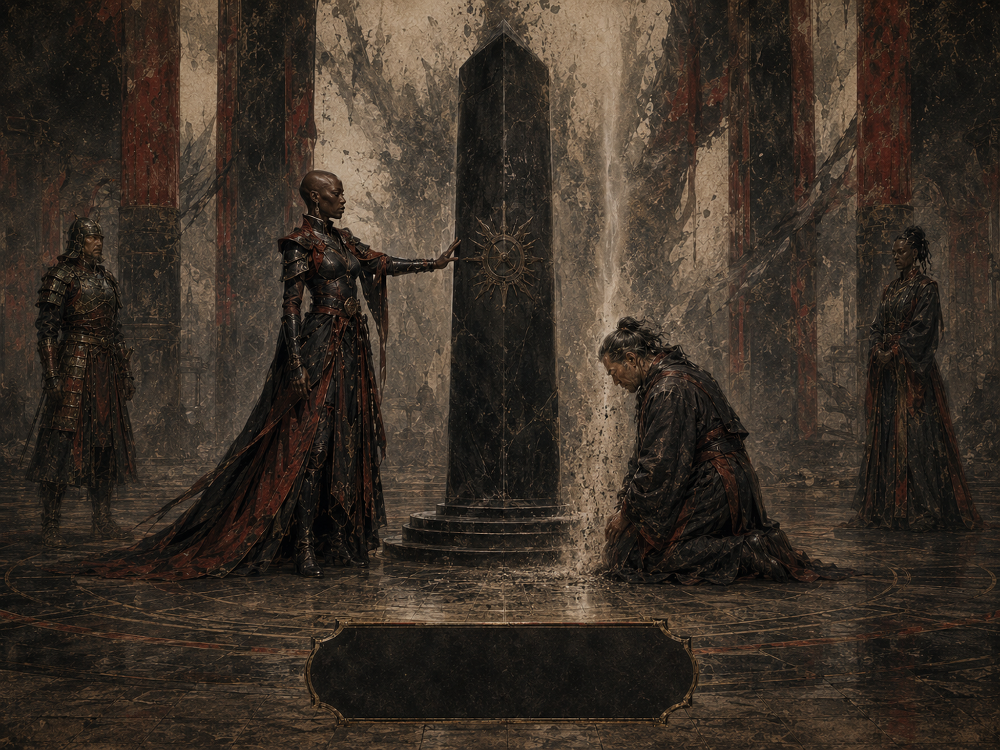
После полного Освобождения персонаж не передаёт Волю и не получает ранговых бонусов. Его обычные параметры восстанавливаются после завершения обряда и необходимого пересчёта листа. Полное Освобождение является исключительным событием: для Империи оно может означать окончательный разрыв со службой, изгнание, особую милость суверена или политическую смерть.
10. Отпечаток Трона и разрыв системы
Снятие с должности или Возврат Воли сами по себе не стирают отпечаток Трона. Пока отпечаток существует, Обелиски и специально предназначенные для этого средства Империи могут распознать прежнюю связь персонажа с Иерархией. Только полное Освобождение навсегда закрывает канал и стирает этот отпечаток.
Смерть отдельного начальника не уничтожает всю ветвь Иерархии. При наличии другого законного звена поток может быть перенаправлен через него. Потеря суверена, разрушение центрального Хрустального Трона или отсутствие признанного преемника вызывает системный кризис. Его точные последствия относятся к сюжету, но они не должны вводиться задним числом без предупреждения игроков.
11. Как применять ранг
Ранговый пакет накладывается поверх обычных правил D&D 5e и правил Единой Силы этой кампании. Все значения нужно записывать отдельно от классовых, расовых и предметных бонусов: так лист можно пересчитать при повышении или утрате связи.
| Термин | Точное правило |
|---|---|
| Накопление | Иерарх сохраняет все уникальные способности нижестоящих рангов. Числовые параметры таблицы не складываются между рангами: для скорости, инициативы, спасбросков и усиления направляющего применяется значение текущего ранга, если прямо не указано обратное. Повышения характеристик и обозначенные как дополнительные прибавки к максимуму хитов накапливаются. |
| Характеристики | При получении I ранга выберите две разные характеристики и уменьшите каждую на 1. На II ранге и при каждом дальнейшем повышении увеличьте на 2 две характеристики по выбору. Выбор делается заново на каждой ступени, а повышения складываются. Оба штрафа I ранга прекращаются при получении II ранга. |
| Предел характеристик | Бонусы Хрустального Трона способны превышать обычный предел характеристики. На I–III рангах предел остаётся 20, на IV повышается до 22, на V — до 24. На VI ранге предел остаётся 24 для персонажа игрока; уникальный Император или Императрица-NPC может иметь значение до 26 по решению Мастера. |
| Скорость | Указанное значение — бонус к базовой скорости ходьбы, а не новая итоговая скорость. Используется только бонус текущего ранга. |
| Инициатива | Числовой бонус заменяет бонус предыдущего ранга. Преимущество, полученное на IV ранге, сохраняется на V и VI рангах и применяется вместе с +10 или +15. |
| Спасброски | Ранговый бонус прибавляется ко всем спасброскам и не заменяет бонус мастерства. Иммунитеты и преимущество применяются дополнительно. |
| Дополнительные хиты | +10 на II, +20 на IV и +80 на VI являются отдельными накопительными прибавками к максимуму хитов: на VI их сумма равна +110. |
| Кости хитов ×1,5 | На III ранге умножьте на 1,5 ту часть максимума хитов, которая получена от классовых костей хитов, округляя вниз. Модификатор Телосложения и фиксированные прибавки не умножаются; число костей для лечения на отдыхе не меняется. |
| Имперская СЛ | 8 + бонус мастерства + модификатор Харизмы + текущий ранг иерарха. Одна и та же СЛ используется для Имперского приказа, Ауры Страха и Голоса Императрицы. |
| Отдых и «раз в день» | Формулировка из старого источника унифицирована: способность восстанавливается после долгого отдыха. У Легендарной устойчивости есть три применения, которые восстанавливаются после долгого отдыха. |
Для направляющих
| Параметр | Как читать |
|---|---|
| Бонус к СЛ | Прибавляется к СЛ спасбросков ваших плетений. Он не применяется к Имперской СЛ: у неё собственная формула. |
| Усиление плетений | Поток Хрустального Трона усиливает плетения подобно ангреалу или са’ангреалу. Указанные для текущего ранга бонус к броскам атаки плетениями, дополнительные кубики урона и множитель дальности/области применяются напрямую. Это усиление не изменяет собственный Уровень Силы (Power Level) направляющего. |
| Дополнительные кубики урона | Дополнительные кубики добавляются один раз за сотворение плетения к одному броску его основного урона. Они используют тот же размер кубика и тот же тип урона, что и основной урон плетения. Если один общий бросок урона применяется ко всем существам в области, усиленный бросок применяется ко всем этим существам. Если плетение совершает несколько отдельных атак или наносит урон неоднократно, дополнительные кубики применяются только к одному броску урона по выбору направляющего. |
| Ангреал и Иерархия | Если направляющий одновременно получает усиление Хрустального Трона и использует ангреал или са’ангреал, одинаковые эффекты не складываются. Для каждого совпадающего параметра используется более сильное значение. |
| Ненаправляющий | Игнорирует весь столбец. Ранг не создаёт способность направлять Единую Силу и не позволяет использовать способности дамане без соблюдения их отдельных условий. |
12. Полная таблица прогрессии
| Ранг и титул | Характеристики и хиты | Скорость | Инициатива | Спасброски | Направляющий |
|---|---|---|---|---|---|
| I Подданный на службе / да’ковале / младший офицер | −1 к двум характеристикам | База | −1 | −1 ко всем | Нет |
| II Благородный лорд / сул’дам-наставник | +2 к двум; +10 хитов | +10 фт | +2 | +1 ко всем | +1 СЛ; +1 к атакам плетениями; +2 кубика урона; дальность/область ×1,5 |
| III Лорд Крови / командир легиона | Ещё +2 к двум; классовая часть хитов ×1,5 | +15 фт | +5 | +2 ко всем; преимущество на спасброски Телосложения | +2 СЛ; +3 к атакам плетениями; +5 кубиков урона; дальность/область ×1,8 |
| IV Наместник / Высокая Кровь | Ещё +2 к двум; предел 22; ещё +20 хитов | +20 фт | Преимущество | +3 ко всем; иммунитет к испугу и очарованию | +3 СЛ; +4 к атакам плетениями; +12 кубиков урона; дальность/область ×3 |
| V Принц Крови | Ещё +2 к двум; предел 24 | +25 фт | +10 и преимущество | +4 ко всем | +3 СЛ; +4 к атакам плетениями; +16 кубиков урона; дальность/область ×3 |
| VI Император / Императрица | Ещё +2 к двум; предел 24 для персонажа игрока / 26 для уникального NPC; ещё +80 хитов | +40 фт | +15 и преимущество | +5 ко всем; легендарная устойчивость | +4 СЛ; +5 к атакам плетениями; +24 кубика урона; дальность/область ×50 |
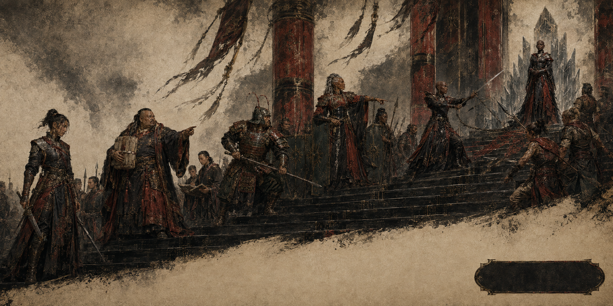
13. Способности рангов
| Ранг | Способность | Полная механика |
|---|---|---|
| II | Аура Имперской Власти | Постоянно: преимущество на проверки Харизмы (Запугивание). 1/долгий отдых: действием примените эффект «Имперский приказ» без расходования ячейки плетения и без компонентов. Цель должна слышать и понимать вас и совершает спасбросок Мудрости против Имперской СЛ. |
| III | Холодная решимость | Пока ваши текущие хиты превышают половину максимума, вы имеете сопротивление всему немагическому урону. Урон, нанесённый плетениями Единой Силы, Аномалией или силовым уроном этим сопротивлением не уменьшается. Как только во время боя ваши хиты впервые опускаются до половины максимума или ниже, до конца боя вы получаете +1 к броскам атаки и урона. Если в момент начала боя ваши хиты уже равны половине максимума или ниже, бонус действует с начала боя. |
| III | Превосходство | Постоянно: вы совершаете спасброски Телосложения с преимуществом. |
| III | Аура Страха | Каждое враждебное существо, которое начинает свой ход в пределах 30 фт от вас и чей уровень персонажа или показатель опасности (ПО) не превышает 3 × ваш текущий ранг Иерархии, должно совершить спасбросок Мудрости против Имперской СЛ. При провале существо становится испуганным вами. В конце каждого своего хода оно повторяет спасбросок, прекращая эффект при успехе. При успешном спасброске, включая повторный, существо становится невосприимчиво к вашей Ауре Страха на 24 часа. |
| IV | Стальная воля | Постоянно: иммунитет к состояниям «испуган» и «очарован». Уже наложенное состояние оканчивается при получении IV ранга и не действует, пока ранг активен. |
| IV | Госпожа дамане | 1/долгий отдых, реакция: когда связанная с вами а’дамом дамане в пределах 30 фт от вас творит плетение с использованием ячейки, для определения эффектов этого плетения считайте, что оно соткано с использованием ячейки на 2 уровня выше фактически затраченной. Эффективный уровень может превышать максимальный уровень ячейки, обычно доступный этой дамане, но не может превышать 9-й уровень. Эта способность не расходует ячейку более высокого уровня и не даёт дамане доступа к новым плетениям: усиливается только уже сотканное плетение. |
| V | Имперская плоть | При получении V ранга выберите дробящий, колющий или рубящий урон. Вы получаете сопротивление выбранному виду урона. Выбор меняется только при повторном ритуальном закреплении ранга. |
| VI | Легендарная устойчивость | 3/долгий отдых: провалив спасбросок, вы можете вместо этого считать его успешным. Решение принимается после броска, но до объявления последствий. |
| VI | Голос Императрицы | 1/долгий отдых, действие, 60 фт. Выберите один режим. Массовое внушение: любое число выбранных вами враждебных существ, которые слышат и понимают вас, совершает спасбросок Мудрости против Имперской СЛ; при провале на цель на 24 часа действует «Массовое внушение». Обет принуждения: одно выбранное существо, которое слышит и понимает вас, совершает спасбросок Мудрости против Имперской СЛ; при провале на него на 30 дней действует «Обет принуждения». |
| VI | Властитель судьбы | В начале своего хода выберите один режим; он действует до начала вашего следующего хода. Суверенный темп: один раз до начала вашего следующего хода вы можете совершить одно дополнительное действие в конце хода другого существа. Это действие не даёт отдельного бесплатного перемещения или бонусного действия, однако его можно использовать для действия «Рывок», получая перемещение обычным способом. Суверенная защита: между началом текущего хода и началом вашего следующего хода вы можете совершить до двух реакций, но не более одной реакции на один и тот же триггер. |
| VI | Легендарная регенерация | В начале каждого вашего хода, если у вас есть хотя бы 1 хит, вы восстанавливаете 25 хитов. Эта способность не действует при 0 хитов и сама по себе не восстанавливает утраченные части тела. |
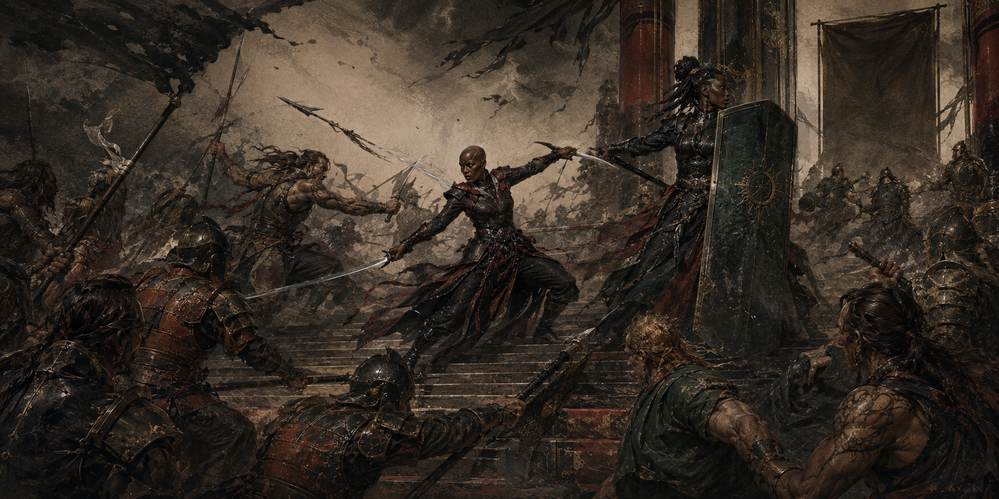
14. Состояния и эффекты приказа
Если способность Трона задаёт собственные цели, дальность, СЛ или длительность, её текст имеет приоритет. Ниже приведены все базовые эффекты, на которые ссылаются ранговые способности.
Испуган
- Пока источник страха находится в линии обзора, существо имеет помеху на проверки характеристик и броски атаки.
- Существо не может добровольно приблизиться к источнику страха.
- Аура Страха разрешает повторный спасбросок в конце каждого хода. Успешный спасбросок прекращает эффект и даёт иммунитет к Ауре Страха этого иерарха на 24 часа.
Очарован
- Существо не может атаковать источник очарования или выбирать его целью вредоносной способности, плетения либо магического эффекта.
- Источник получает преимущество на проверки характеристик при социальном взаимодействии с существом.
- Очарование само по себе не заставляет выполнять приказы. Для этого нужен отдельный эффект.
Приказ
Одна цель в пределах 60 фт, которая слышит и понимает вас, совершает спасбросок Мудрости против вашей Имперской СЛ. При провале она исполняет однословный приказ на своём следующем ходу. Эффект не действует на нежить, а также если приказ прямо причинит цели очевидный непосредственный вред. После исполнения эффект заканчивается.
- Беги. Цель тратит ход, удаляясь от иерарха самым быстрым доступным способом.
- Брось. Цель роняет удерживаемые предметы и заканчивает ход.
- Замри. Цель не перемещается и не совершает действий в этот ход.
- Пади. Цель падает ничком и заканчивает ход.
- Приблизься. Цель движется к иерарху кратчайшим безопасным путём и заканчивает ход, достигнув ближайшей доступной точки.
Массовое внушение
Каждая выбранная цель, которая слышит и понимает формулировку, совершает отдельный спасбросок Мудрости. При провале она в меру своих возможностей следует предложенному курсу действий, если тот звучит разумно. Требование, явно ведущее к самоубийству или причинению себе вреда, не подходит.
В версии Голоса Императрицы эффект длится 24 часа. Для конкретной цели он заканчивается раньше, если требование выполнено либо если иерарх или его союзники наносят этой цели урон. Существо с иммунитетом к очарованию невосприимчиво.
Обет принуждения
Одна цель при провале спасброска Мудрости становится очарованной вами на 30 дней и получает приказ, запрет или обязанность. Если она впервые за сутки сознательно действует вопреки обету, то получает 5d10 психического урона. Урон срабатывает не чаще одного раза в сутки.
Обет не требует немедленного самоубийства или заведомо невозможного действия, но может быть опасным и жестоким. Его можно снять эффектами «Снятие проклятия» (Remove Curse), «Высшее восстановление» (Greater Restoration), «Желание» (Wish) или признанными Мастером аналогами Единой Силы. Иммунитет к очарованию защищает от обета.
15. Профили рангов I–VI
Профили соединяют социальную роль, художественное проявление и механический пакет. Они не заменяют полную таблицу и тексты способностей, а показывают, как ранг выглядит в мире.
I · Основание пирамиды
Место в Империи. Подданные на службе, да’ковале, младшие офицеры и низшая знать уже передают Волю вверх, но ещё не получают усиления взамен.
Усталость приходит раньше обычного, а присутствие старшего ощущается как тяжесть в груди. Человек остаётся собой, но собственный предел словно отодвинут на шаг назад.
Пакет ранга. −1 к двум характеристикам; −1 к инициативе; −1 ко всем спасброскам; базовая скорость; бонусов направляющего нет.
Способности. Нет. Защита закона и право служить являются социальными преимуществами, а не боевыми способностями.
II · Благородный лорд
Место в Империи. Малые начальники, офицеры, сул’дам-наставники и представители Крови, управляющие десятками подчинённых.
В голосе появляется властность, взгляд становится тяжелее. После слабости I ранга возвращение жизненной силы многие воспринимают почти как опьянение — и как личное подтверждение того, что порядок Империи работает.
Пакет ранга. +2 к двум характеристикам; +10 хитов; скорость +10 фт; инициатива +2; +1 ко всем спасброскам; для направляющего: +1 СЛ, +1 к атакам плетениями, +2 кубика урона, дальность/область ×1,5.
Способности. Аура Имперской Власти; Имперский приказ — 1/долгий отдых.
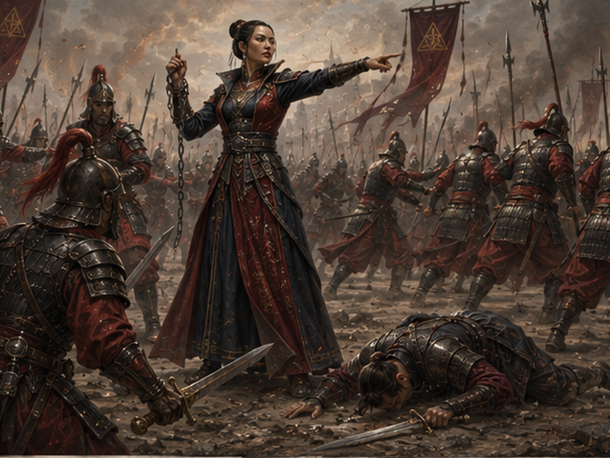
III · Лорд Крови
Место в Империи. Командиры легионов и офицеры средней Крови, чьи решения двигают тысячи людей.
Реакции ускоряются, движения становятся экономными. Пока командир сохраняет силы, немагический урон ранит его слабее; плетения Единой Силы, Аномалии и силовой урон обходят эту защиту. Тяжёлое ранение не ломает его, а делает опаснее.
Пакет ранга. Ещё +2 к двум характеристикам; классовая часть хитов ×1,5; скорость +15 фт; инициатива +5; +2 ко всем спасброскам и преимущество на спасброски Телосложения; для направляющего: +2 СЛ, +3 к атакам плетениями, +5 кубиков урона, дальность/область ×1,8.
Способности. Превосходство; Холодная решимость; Аура Страха — 30 фт.
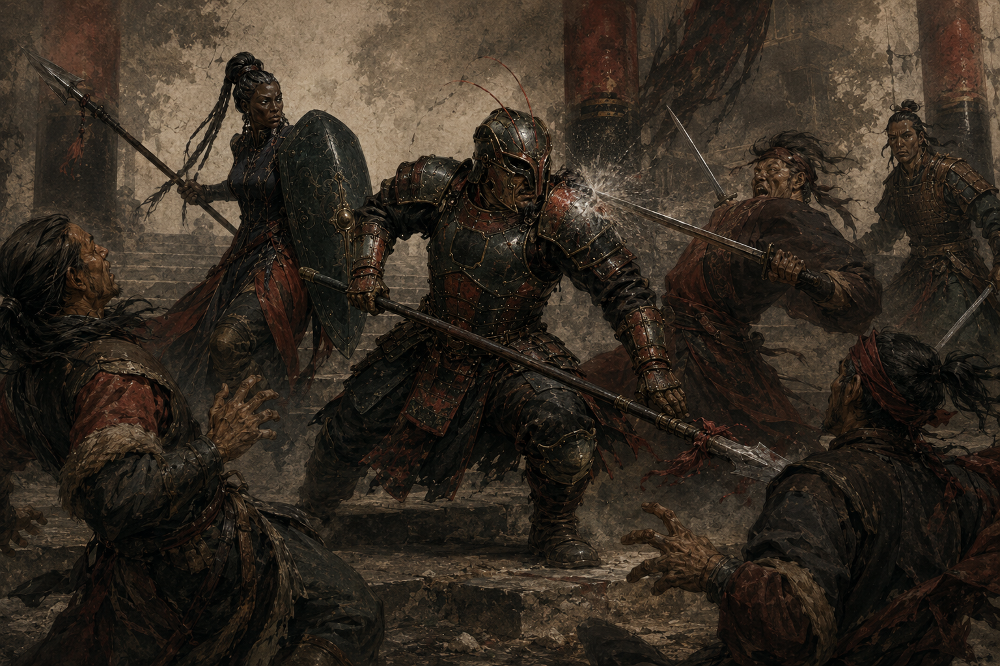
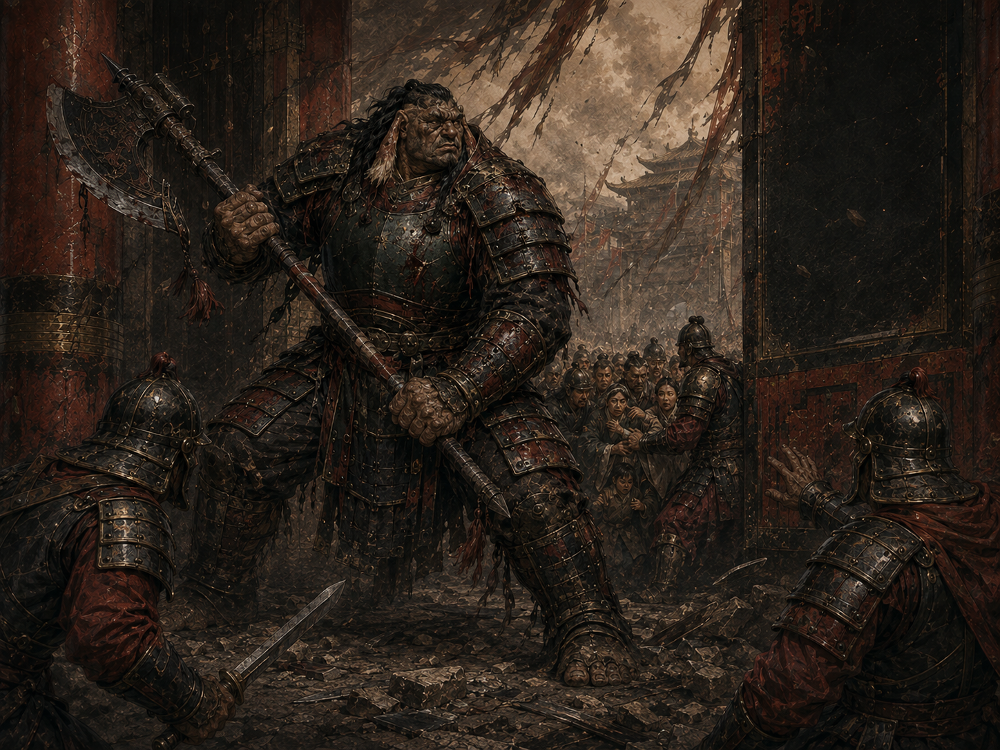
IV · Высокая Кровь
Место в Империи. Имперские наместники и представители Высокой Крови, управляющие провинциями, армиями и значительными ветвями пирамиды.
Их власть ощущается до первого слова. Их разум не поддаётся страху и чужому внушению, а связанная дамане плетёт под приказом с силой, которой не достигла бы в одиночку.
Пакет ранга. Ещё +2 к двум характеристикам; предел 22; ещё +20 хитов; скорость +20 фт; преимущество на инициативу; +3 ко всем спасброскам; иммунитет к испугу и очарованию; для направляющего: +3 СЛ, +4 к атакам плетениями, +12 кубиков урона, дальность/область ×3.
Способности. Стальная воля; Госпожа дамане — 1/долгий отдых.
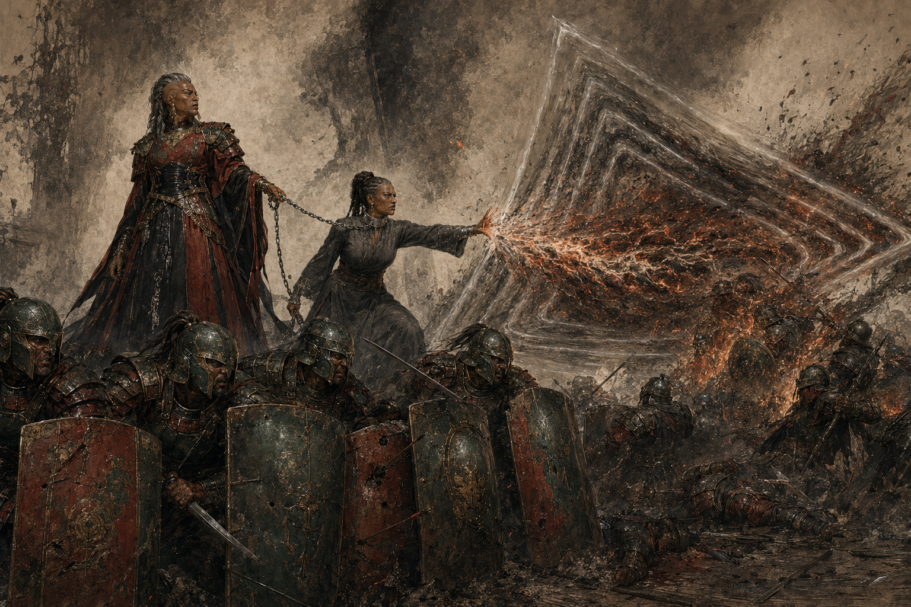
V · Принц Крови
Место в Империи. Ближайшие к престолу наследники и немногие фигуры, чьё существование само меняет расстановку сил при дворе.
Сила, поступающая по Иерархии, укрепляет тело Принца Крови. Он выдерживает удары, способные тяжело ранить обычного человека, реагирует раньше большинства противников, а само его появление меняет расстановку сил.
Пакет ранга. Ещё +2 к двум характеристикам; предел 24; скорость +25 фт; инициатива +10 с преимуществом; +4 ко всем спасброскам; сопротивление одному выбранному виду физического урона; для направляющего: +3 СЛ, +4 к атакам плетениями, +16 кубиков урона, дальность/область ×3.
Способности. Имперская плоть; все способности II–IV рангов сохраняются.
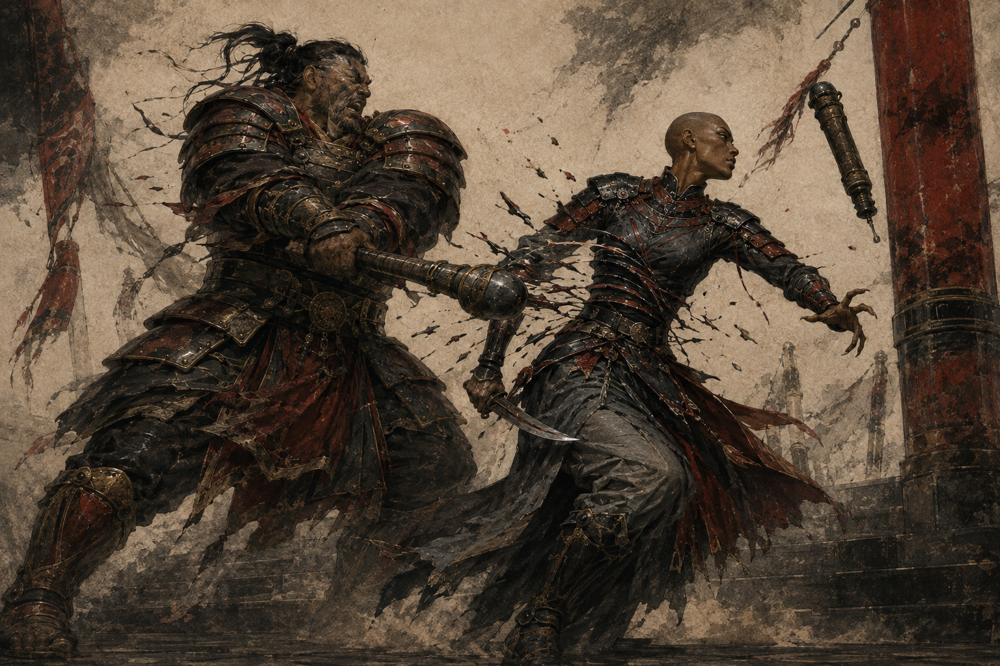
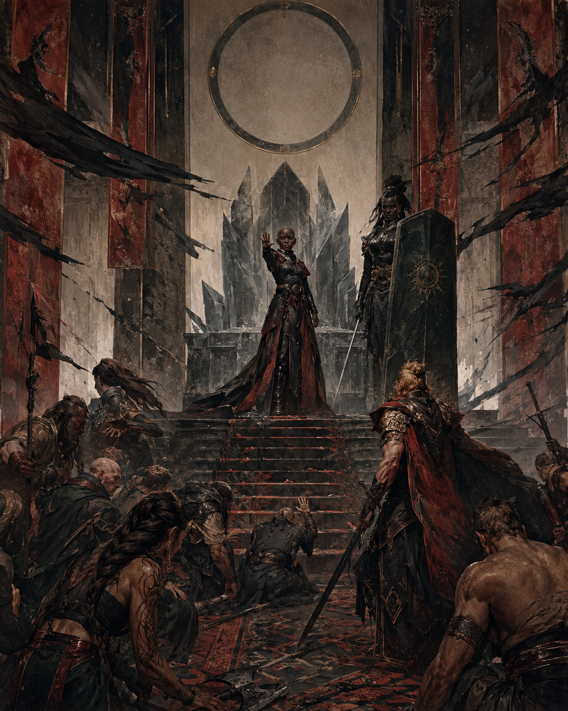
VI · Владыка Трона
Место в Империи. Единственный Император или Императрица — вершина, к которой сходится дыхание Империи.
Раны затягиваются на глазах, голос способен изменить намерения множества людей, а скорость принятия решений выходит за пределы обычного человеческого темпа. Владыка остаётся смертным, но тело и воля поддерживаются всей вершиной Иерархии.
Пакет ранга. Ещё +2 к двум характеристикам; предел 24 для персонажа игрока или 26 для уникального NPC; ещё +80 хитов; скорость +40 фт; инициатива +15 с преимуществом; +5 ко всем спасброскам; для направляющего: +4 СЛ, +5 к атакам плетениями, +24 кубика урона, дальность/область ×50.
Способности. Легендарная устойчивость, Голос Императрицы, Властитель судьбы и Легендарная регенерация; все способности нижних рангов сохраняются.
16. Памятка игрока
| Когда | Что проверить |
|---|---|
| Получили или изменили ранг | Пересчитайте характеристики, предел характеристик, максимум хитов, скорость, инициативу, спасброски, способности и параметры направляющего. |
| Вы направляющий | Примените бонус к СЛ плетений и ангреальный профиль усиления только текущего ранга. |
| Используете ангреал | Не складывайте одинаковые бонусы с Иерархией; для каждого совпадающего параметра используйте более сильное значение. |
| Начался бой | Учтите инициативу и порог Холодной решимости. На VI ранге в начале своего хода выберите режим Властителя судьбы. |
| Враг начинает ход в 30 фт | На III ранге и выше проверьте, не превышает ли его уровень/ПО 3 × текущий ранг; если не превышает, примените Ауру Страха. |
| Хиты стали ≤ половины | Холодная решимость перестаёт давать сопротивление немагическому урону; +1 к атакам и урону действует до конца боя. |
| Дамане творит плетение | Если у вас ранг IV или выше, вы связаны с дамане а’дамом и она находится в пределах 30 фт от вас, вы можете реакцией применить Госпожу дамане (1/долгий отдых). |
| Провален спасбросок | На VI ранге решите, тратить ли одно из трёх применений Легендарной устойчивости. |
| Начался ваш ход | На VI ранге при текущих хитах выше 0 восстановите 25 хитов. |
17. Ответы на частые вопросы
Можно ли получить высокий ранг, просто собрав сторонников?
Нет. Сторонники создают политическое давление и нестабильный поток, но механический ранг требует имперского пожалования и ритуального закрепления.
Действуют ли бонусы вдали от Шондара?
Да. Расстояние само по себе ничего не отключает. Нужен разрыв цепи, формальное понижение, полное Освобождение или явно объявленный сюжетный эффект. Сам по себе Возврат Воли не подавляет ранг.
Становится ли сул’дам направляющей?
Нет. Столбец «Направляющий» применяется только к тому, кто уже способен направлять. «Госпожа дамане» усиливает чужое плетение по собственным условиям.
Складывается ли скорость всех пройденных рангов?
Нет. Используйте бонус текущего ранга. На V ранге это +25 фт к базовой скорости, а не +70 фт.
Сохраняется ли преимущество инициативы после IV ранга?
Да. V и VI ранги сохраняют его и добавляют соответствующий числовой бонус.
Как определяется порог Ауры Страха?
Сравните уровень персонажа или показатель опасности цели с тройным текущим рангом иерарха. III ранг воздействует на цели до 9 уровня/ПО, IV — до 12, V — до 15, VI — до 18 включительно.
Можно ли усилить плетение выше обычных возможностей дамане?
Да, в смысле эффективного уровня уже сотканного плетения. «Госпожа дамане» повышает уровень фактически использованной ячейки на 2 для расчёта эффекта, но итоговый эффективный уровень не может превышать 9-й. Это не даёт дамане новых плетений или новых ячеек.
Складывается ли усиление Трона с ангреалом?
Нет. Для каждого совпадающего параметра используется более сильное значение. Бонусы к СЛ и атакам плетениями, дополнительные кубики урона и множитель дальности/области не складываются арифметически.
Как применяются дополнительные кубики урона плетений?
Они добавляются один раз за сотворение к одному броску основного урона плетения и используют тот же размер кубика и тип урона. Если один общий бросок применяется ко всем целям в области, усиление действует на этот общий бросок. При нескольких отдельных атаках или повторяющемся уроне дополнительные кубики применяются только к одному броску по выбору направляющего.
Работает ли регенерация при 0 хитах?
Нет. В начале хода должен оставаться хотя бы 1 хит.
Можно ли отменить Имперский приказ Разрезом Плетения?
Нет. Это эффект Иерархии, а не плетение Единой Силы.
Чем отличаются снятие с должности, понижение, Возврат Воли и Освобождение?
Снятие с должности — административное решение и само по себе не обязательно изменяет ранг. Понижение изменяет механический ранг. Возврат Воли прекращает передачу собственной Воли вверх, но сохраняет отпечаток Трона, сам по себе не понижает ранг и не отключает силу, поступающую от законно связанных нижестоящих. Полное Освобождение окончательно закрывает канал и стирает отпечаток.

И нет ни начала, ни конца вращению Колеса Времени
Четвёртая Эпоха · 270 лет после Последней Битвы